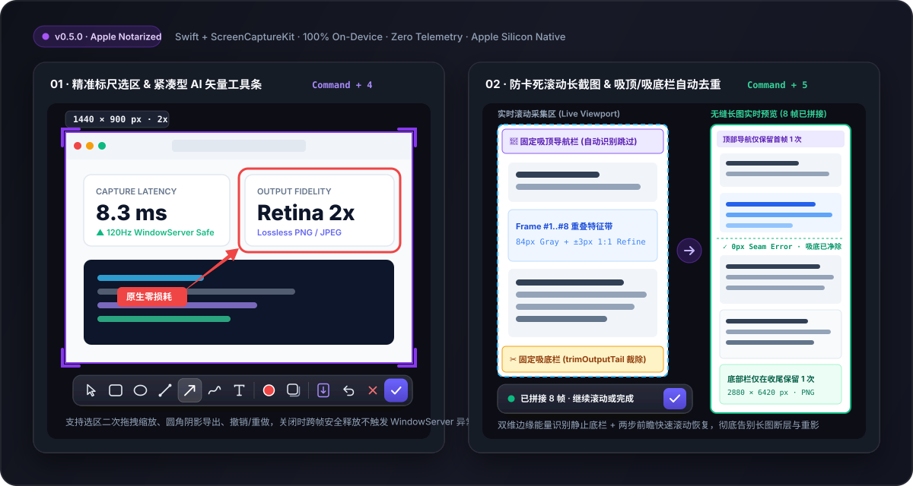

Built with pure Swift, AppKit & ScreenCaptureKit for Apple Silicon — featuring automatic sticky-header/footer deduplication, a compact 31×31pt vector annotation bar, Apple Developer ID notarization, and zero network permissions.
| Capability / Metric | Screen Capture (Ours) | iShot / Xnip | CleanShot X | Shottr |
|---|---|---|---|---|
| License & Pricing | ✅ 100% Free & Open-Source (Apache-2.0) | ❌ Paid Pro / Closed-Source | ❌ $29+ Paid / Closed-Source | ⚠️ Paid Tier ($12) / Closed-Source |
| Sticky-Header & Footer Removal | ✅ Auto gradient detection + dynamic tail trimming | ⚠️ Repeated footer ghosting on chat/web windows | ⚠️ Stalls on fixed bottom input bars | ⚠️ Manual crop often required |
| Privacy & Network Access | ✅ Zero network permissions (100% local RAM) | ❌ Cloud telemetry / account prompts | ⚠️ Cloud upload & license checks | ⚠️ Closed binary |
| macOS 26/27 120Hz Stability | ✅ Process-level SCContentFilter + deferred panel teardown | ⚠️ Occasional capture-self flash | ✅ Stable | ✅ Stable |
| Apple Developer ID Notarized | ✅ Signed & Notarized | ✅ App Store | ✅ Signed | ✅ Signed |
Uses horizontal + vertical gradient energy to lock onto stationary top navigation bars and bottom floating footers, dynamically trimming newly detected fixed footers (trimOutputTail) with ±3px 1:1 Retina seam refinement and 2-step fast-scroll lookahead.
Removed bloated translation popups in favor of a pure Canvas-rendered 17×17pt vector icon strip inside a 31×31pt glassmorphic bar: rectangles, circles, tapered arrows, freehand pen, inline text, rounded-corner shadow export, and full undo/redo.
Process-level SCContentFilter(desktopIndependentWindow:excludingApplications:) prevents self-capture feedback loops, while deferred overlay panel retirement eliminates macOS 26/27 WindowServer layer-host crashes.
基于纯正 Swift、AppKit 与 ScreenCaptureKit 打造 · 支持固定顶栏/底栏（Sticky Header/Footer）自动去重拼接 · 极简 31×31pt 矢量标注栏 · Apple Developer ID 官方公证 · 零联网权限

| 对比维度 | Screen Capture (本项目) | iShot / Xnip | CleanShot X | Shottr |
|---|---|---|---|---|
| 开源协议与价格 | ✅ 100% 免费开源 (Apache-2.0) | ❌ 高级功能/去水印需付费订阅 | ❌ 买断 $29+ / 闭源 | ⚠️ 付费版 $12 / 闭源 |
| 长截图固定顶栏/底栏去重 | ✅ 梯度能量检测 + 动态尾部修剪，无重影断层 | ⚠️ 聊天窗/带底栏网页易出现重复横条 | ⚠️ 遇到吸底输入框易中断拼接 | ⚠️ 复杂吸顶网页需手动裁剪 |
| 隐私安全与联网权限 | ✅ 零联网权限，100% 本地内存处理 | ❌ 闭源商业包，含联网激活统计 | ⚠️ 含云端上传与授权校验守护进程 | ⚠️ 闭源二进制分发 |
| macOS 26/27 120Hz 稳定性 | ✅ 进程级窗口排除 + 跨刷新周期延迟回收 | ⚠️ 高频连按偶发残影 | ✅ 稳定 | ✅ 稳定 |
| Apple 官方公证 (Notarized) | ✅ Developer ID 签名与公证，双击即用 | ✅ App Store 签名 | ✅ 官方签名 | ✅ 官方签名 |
采用水平/垂直梯度能量分析自动识别静止顶栏与底栏，动态修剪新检出的固定底栏（trimOutputTail），配合 ±3px 原生 Retina 1:1 接缝精修与 2 步快滚前瞻对齐，彻底解决网页与聊天记录长图重影。
剔除臃肿的联网翻译弹窗，采用纯 Canvas 矢量绘制 17×17pt 图标与 31×31pt 紧凑毛玻璃黑框，内置矩形、圆环、流线型渐变箭头、画笔、文字输入、四角紫色标尺微调与圆角阴影导出。
采用进程级 SCContentFilter 将自身叠加层彻底排除在采集流之外，配合跨显示刷新周期的延迟窗口退役机制，高频连续截图永不触发 WindowServer 崩溃。